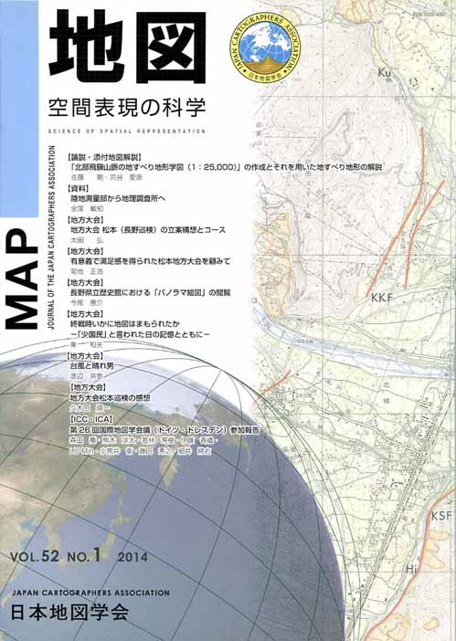

≪No.52 No.1 添付地図≫

本図を許可なく複製・利用することを禁止します。
| 最 新 号 | バックナンバー | 添付地図目録 | 投 稿 規 程 |
Vol.52 No.１ （通巻２０５号） ２０１４年
| 【論説・添付地図解説】 | 「北部飛騨山脈の地すべり地形学図（1:25,000）」の作成とそれを用いた地すべり地形の解説 | 佐藤 剛・苅谷愛彦 |
| キーワード：地形学図、地すべり地形、氷河地形、地形発達、北部飛騨山脈 | ||
| 【資料】 | 陸地測量部から地理調査所へ | 金窪敏知 |
| キーワード：陸地測量部、松本盆地、疎開、終戦、渡邉正、GHQ、地理調査所 | ||
| 【地方大会】 | 地方大会 松本（長野巡検）の立案構想とコース | 太田 弘 |
| 【地方大会】 | 有意義で満足感を得られた松本地方大会を顧みて | 菊地正浩 |
| 【地方大会】 | 長野県立歴史館における「パノラマ絵図」の閲覧 | 今尾恵介 |
| 【地方大会】 | 終戦時いかに地図はまもられたか−「少国民」と言われた日の記憶とともに− | 秦 和夫 |
| 【地方大会】 | 台風と晴れ男 | 渡辺英恵 |
| 【地方大会】 | 地方大会松本巡検の感想 | 久木田順一 |
| 【lCC・lCA】 | 第26回国際地図学会議（ドイツ・ドレスデン）参加報告 | 森田 喬・熊木洋太・若林芳樹・伊藤香織・LU Min・小荒井衛・藤田秀之・細井將右 |
| キーワード：ICA、ICC、国際地図学会議、ドイツ、ドレスデン | ||
| 【書評・紹介】 | 地図でみる中国の歴史 | 柴田健一 |
| 【特別会員名簿】 | ||
| 【学会記事】 | ||
| 【添付地図】 | 北部飛騨山脈の地すべり地形学図（1:25,000） | |
|
≪No.52 No.1 表紙≫ |
|
|  |
|
|
|
≪No.52 No.1 添付地図≫ |
|
本図を許可なく複製・利用することを禁止します。
|